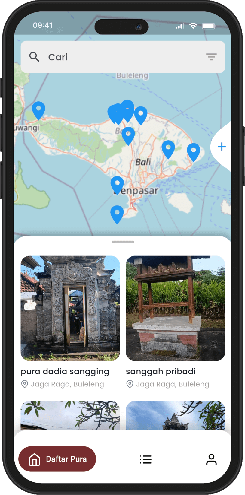
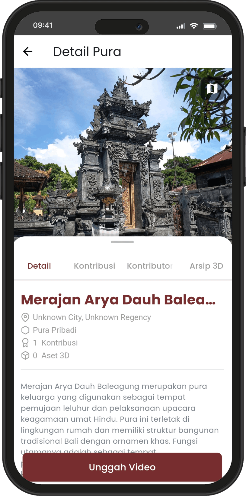
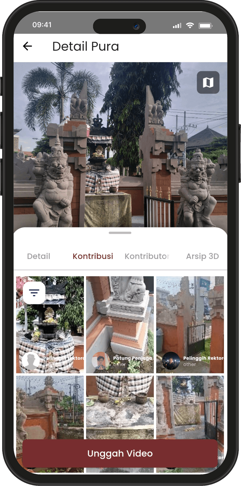
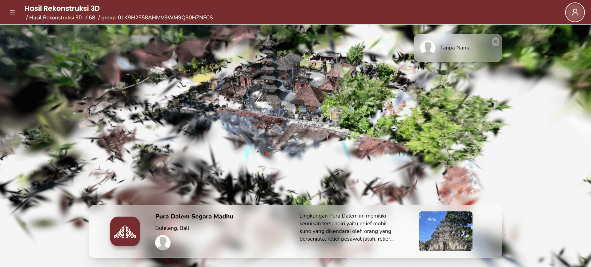
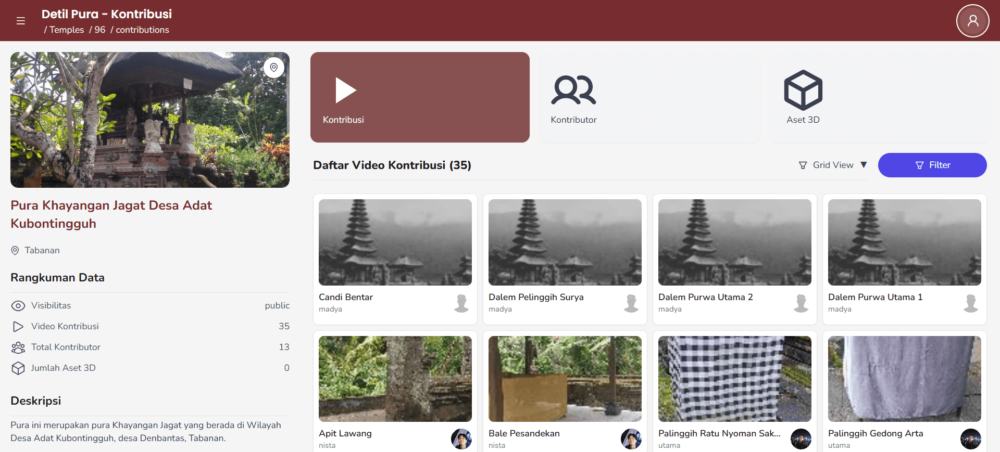
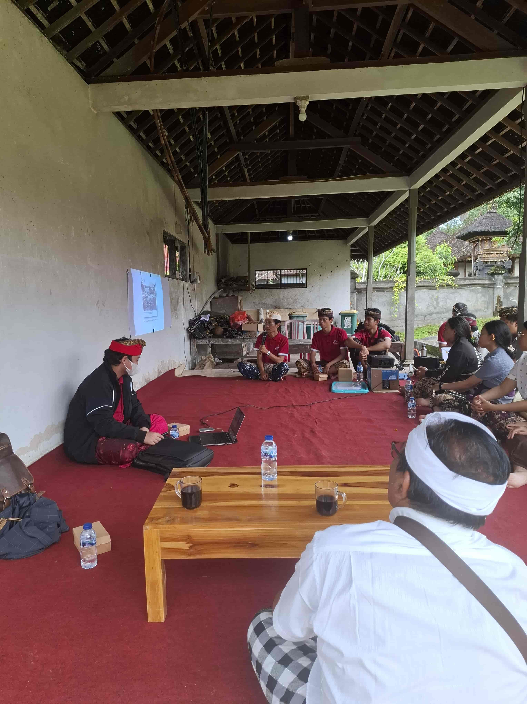
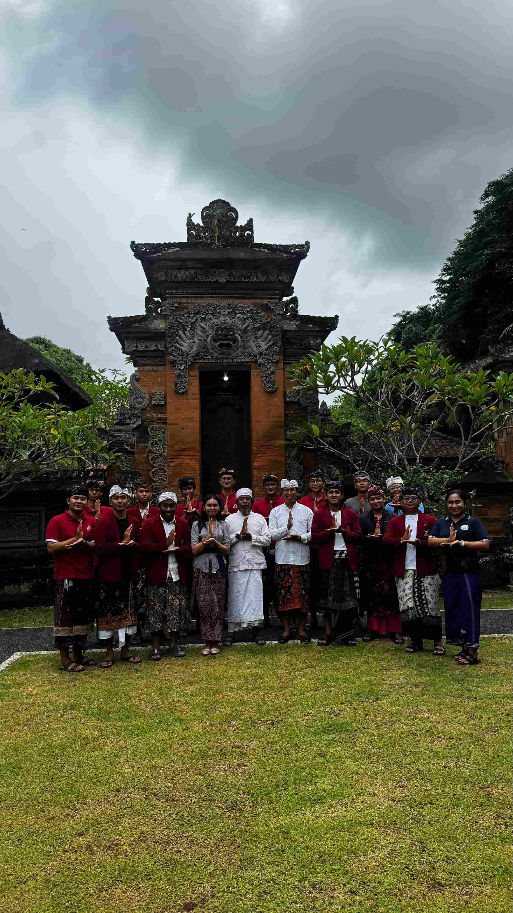
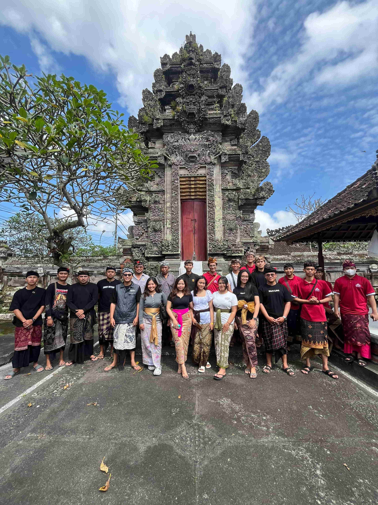

We aim to empower Balinese communities to preserve their cultural heritage for future generations. We believe a participatory approach — data by people for people — is the best way to achieve documentation that is scalable, sustainable and culturally safe.
Balinese temples have undergone cycles of destruction and reconstruction for hundreds of years. With each recreation, we have lost the authenticity of past architecture and values, and before 2024, there had been no serious effort to create records of the temples for future generations. We aim to create a record for generations over the next 50 years, 100 years and beyond.
Our approach is centred around community participation. Local communities contribute videos of temples and temple parts in their areas. We then use these videos to create high-quality 3D records of the temples. The videos, 3D models and metadata of the temples are all looped back to the communities.
We envision the data collection campaign that runs every 5 years where, for a number of months, everyone in Bali contributes video records.
On our platform,
private family temples
can only be accessed by the owner, ensuring data privacy. This video is used with permission.
Public temples can be seen and contributed to by anyone. This video shows the great gates of Pura Sari Abangan, reconstructed from community contributions. This temple was built between the 8th and 11th centuries.
With the amount of collected records, the potential applications for cultural heritage preservation and education are enormous. This is an example of immersive visualisation of a temple.
Temples Documentation at Scale
Creating 3D records of thousands of sacred places is crucial but it's not an easy task. We are committed to tackle this challenge.
An interactive map depicting the locations of documented temples across Bali.
Go to the map.
Technology Overview
We employ advanced digital technologies such as 3D reconstruction and virtual reality combined with human and social factors to document and preserve Bali's rich cultural heritage. Our team of experts collaborates with local communities to ensure that these technologies are used in a culturally sensitive and sustainable manner.
With over 10 digital portfolios, our technology stack includes: mobile applications for data collection, dashboard for data management, 3D reconstruction pipeline, mixed reality for immersive experiences, and more.
Our mobile application is designed to facilitate efficient video contributions in the field. It allows community members to capture high-quality videos, record audio, and input metadata directly from their mobile devices. The app is user-friendly and optimised for use in remote locations with limited connectivity.

Temples
Find or create temples

Temple View
Details of each temple

Temple's Contributions
List of video contributions
My Contributions
See how much you have contributed
Dashboard
The dashboard serves as the central hub for managing and visualising the collected data. It provides tools for data analysis, reporting, and monitoring the progress of various projects within the Bali Digital Heritage Initiative.
Screenshots of initial version of the dashboard.
Reconstruction
Our reconstruction pipeline utilises advanced 3D Gaussian Splatting techniques to create accurate digital replicas of the temples or temple parts. This process involves selecting frames from contribution videos, processing the data to generate 3D models, and refining these models to ensure fidelity to the original structures.
Video contribution
Frames selection
Reconstruction
Final 3D Record
This is a public temple named Pelinggih Segara located in Sanur, Bali. It has a unique feature as it is made of corals.
This video was contributed by Komang Aditya Primantara on 20 March 2025.
Viewer
Our web viewer allows local and global communities to explore and interact with the 3D models generated from our reconstruction pipeline. It provides an intuitive interface for navigating the models, viewing details, and accessing related information about each temple.


Screenshots of initial version of the viewer.
Visualisations
We explore various visualisation techniques to present the reconstructed 3D models and associated data in engaging and informative ways. These visualisations aim to enhance understanding and appreciation of Bali's cultural heritage among diverse audiences.
One of the visualisation we are exploring using Apple's Vision Pro. Built using MetalSplatter.



Working with Community
Community involvement at the early stage of the video collection campaign is important to us. When possible, our approach prioritises meeting with village stakeholders to introduce our mission, discuss potential risks, and work with the local community to ensure the campaign's effectiveness.
So far, we have run workshops at Jagaraga, Kawan, Cacab-Jangkahan, and Kubontingguh villages.